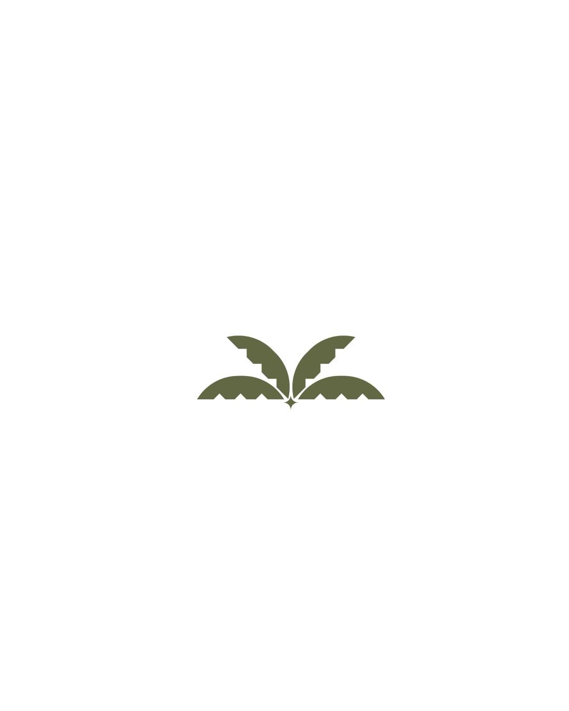

A government initiative dedicated to empowering Emirati youth and strengthening their engagement in the agricultural sector
Explore InitiativesThe UAE Youth Agriculture Community is a government initiative under the Federal Youth Authority, dedicated to empowering Emirati youth and strengthening their engagement in the agricultural sector, with a strong focus on sustainability, innovation, and modern farming practices.
To build an informed and impactful youth generation leading the future of sustainable agriculture in the UAE.
A certification system recognizing young Emirati farmers across 6 agricultural categories with progressive levels.
Learn MoreA comprehensive program preparing young agricultural leaders through councils, workshops, field visits, and innovation camps.
Learn MoreAn interactive digital platform on Instagram connecting young farmers, innovators, and entrepreneurs in the UAE agricultural sector.
Learn MoreAccess training workshops, field visits, and mentorship from industry experts.
Launch innovative agricultural startups with support from the Agripreneur Innovation Camp.
Connect with like-minded youth, government entities, and private sector partners.
Earn the Young Farmer Seal certification recognized by UAE agricultural authorities.
A certification initiative by the Emirates Youth Council for Agriculture
Applicant must be UAE youth (under 35 years)
Project must be owned and managed by youth
Project linked to agricultural production or food processing
Compliance with local regulations
Achieving qualifying points in technical evaluation
Empowering Emirati youth to lead sustainable agriculture and support national food security
The Youth Agriculture Ambassadors initiative aims to empower Emirati youth in the agricultural sector and strengthen their role in supporting national food security, by preparing a generation of young leaders capable of innovation and contributing to sustainable agriculture development. The initiative also addresses existing challenges, notably youth reluctance toward agriculture and the gap between scientific research and field application.
Qualifying national cadres specialized in modern agriculture and food security
Launching innovative startups that enhance local production
Building partnership networks with government, private sector, and international organizations
Spreading awareness of sustainable agriculture and motivating youth engagement
10-12 monthly councils with experts in food security, smart agriculture, water management, and climate change
6-8 training workshops in technical and practical skills in modern agriculture
4 visits to advanced farms: Pure Harvest, Emirates Bio Farm, Elite Agro, National Agricultural Center
Under preparation — Netherlands and China have shown interest, funding is being secured
3-5 intensive days for agricultural entrepreneurship — idea generation, business model development, and investor pitches
An interactive digital platform connecting young farmers and agricultural innovators
An interactive digital platform on social media (Instagram) under the name UAE Youth Agriculture Community @Agriyouth.ae — aims to attract and empower young farmers, those interested in agriculture, innovators, and entrepreneurs in the agricultural field within the UAE.
Managed by the Emirates Youth Council for Agriculture, under the umbrella of: The Federal Youth Authority.
Strengthening connections among the agricultural community members
Sharing knowledge and experiences among community members
Showcasing opportunities and initiatives in the agricultural sector
Fostering innovation and sustainability in agriculture
Get in touch with the AgriYouth team